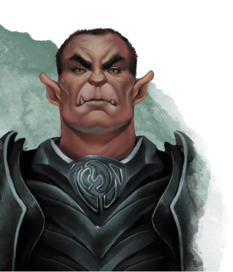
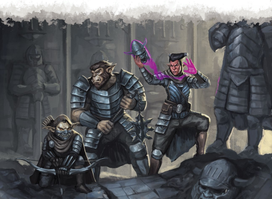
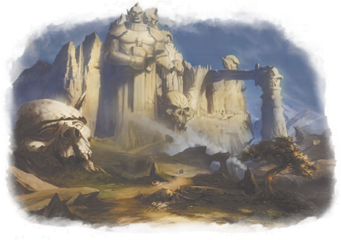

随着Kapaa’vola（歹毒低语）的扩散和达坎帝国的迅速崩溃，许多最伟大的领袖将追随者们封闭在了地下堡垒中。每个军团都负责守护帝国的一个支柱。他们全体都自称为Kech Dhakaan——帝国守护者。每个氏族的名字都是根据他们选择的使命决定；因此，Kech Volaar是文书守护者，而Kech Shaarat是利刃守护者。在Uul’kala（梦咏者）的帮助下，各个孤立的堡垒能在漫长的岁月中保持沟通，并使这一伟业得以实现。但是一部分Kech堡垒从来没有过Uul’kala，也有一部分Kech堡垒在岁月中失去了自己的Uul’kala。
《艾伯伦：自终末战争中复苏》的第四章介绍了达坎后裔的基本信息、战役引子和可选NPC。本节将对那章中介绍的氏族进行扩展，并描述一些不为人知或尚未活跃的守护者氏族。这不是一个完整的列表，DM可以自由加入新的Kech——无论这个Kech是与其他Kech有联系，还是处于隔离之中都没有问题。反之，DM也能在战役的故事不适合时从列表中移除部分Kech。
在这些氏族中，Kech Shaarat和Kech Volaar已经在达贡出名。但是达贡人尽管知道这两个氏族的存在，但不知道他们的起源。其他氏族现在默默无闻，神秘莫测，不过引人注目的行动可能很快就会为他们带来盛名、或恶名。
Kech Draal：“城市守护者”
虽然达坎人最著名的是武器制造工艺，但其实他们的防御工事和市政工程建造技术也丝毫不逊色。五国中，许多最伟大的城市就是建筑在达坎的地基之上，而其他达坎要塞的废墟也能在经历数千年的岁月后仍然存留于世。这些技术就是Kech Draal所守护的宝藏，Draal的daashor（奇械师）专门研究变化系效果和土石塑造技术。每个kech都有自己的建筑师，就像Draal也有自己的军队和duur’kala（挽歌咏者）一样——但石工和采矿技术始终是Kech Draal的骄傲。
Kech Draal对成为将要登基的帝王没什么兴趣。他们的期望是能亲手建造新的帝国，而不是与其他守护者进行竞争；他们的目标只是实现自己的梦想。他们还没有让世界知晓自己的存在，而这最终取决于DM。他们地下堡垒的位置可能是在沃奥特或寇斯正下方，一直以来他们都秘密地居住在现代首都的地基之下。
在Kech Draal中，golin’dar扮演着比许多其他氏族更重要的角色。虽然形式上氏族是由挽歌咏者Kuula Dhakaan和军阀Druun Dhakaan领导，但是ghaal’dar需要与一个golin’dar议会协商才能进行任何重大决策。Taala是这个议会的高级发言人，因为她的睿智和技能而倍受尊敬。
Kech Draal的中立性使这个氏族的人在任何一个守护者氏族中都受会到欢迎，所以很适合达坎PC。一名Draal角色可能正在收集世界的情报、寻找失落的遗物，或只是渴望现场调查数千年间发展起来的建筑风格。
当kech的智者发现Kapaa’vola（歹毒低语）带来的威胁时，一些氏族选择了撤退——躲在地下堡垒中等等诅咒散去。但是有一名氏族领袖——Khaas Dhakaan丝毫没有躲藏的想法。Khaas召集了当时最伟大的英雄们——达坎冠军勇士、Khesh’dar（静默族）刺客、兽人护门者德鲁伊，带领军队开进凯博尔深处，杀入作为腐蚀者Dyrrn监狱的半位面中。Khaas发誓要终结歹毒低语，并夺回被Dyrrn及其爪牙所偷走的神器——他相信，只要有了神器，就能重建崩溃的帝国。
从此，Khaas和他手下的冠军勇士们无论是在现实世界，还是在Uul Dhakaan（达坎之梦）中都没了音讯，人们都认为已经永远的失去了他们。但事实上，他们被困在Dyrrn的半位面中，与异变魔的爪牙们进行着无休止的战斗。时间的流逝速度在Dyrrn的国度中非常奇怪，根据Ghaalrac自己的记录，他们从开始这项任务至今还不到三个世纪。被困在这个疯狂国度中的Ghaalrac将达坎和护门者的技术与异变魔的共生体进行了融合，由此诞生的成果对于外人来说可能是毛骨悚然的。他们创造出了强力的活体武器和神器，以及拥有超自然力量的魔育冠军勇士——例如拥有巨魔般再生能力的熊地精，能够跨越空间的地精刺客。他们还找到了将自己的意志强加于异怪的办法，强迫眼魔和触须怪为他们服务。
那些冒险与Kech Ghaalrac一起开进凯博尔的兽人护门者德鲁伊们的后代在氏族的种姓系统中以德鲁伊魔法专家的身份存留至今。然而，可能是因为和自然世界隔绝太久，这些前护门者所承载的传统已经和地面的同志们大不相同。虽然Kech Ghaalrac兽人仍然以对抗异怪为目标，但是在异界生活了数百年的他们对于其他护门者来说也是异质的存在。
如今，在凯博尔中经历了数世纪的战斗后，Kech Ghaalrac胜利回归。现任领袖（他也继承了Khaas这个名字）拥有被Ghaalrac称为Ur’taash“第一皇冠”的神器。据说这顶皇冠是Jhazaal Dhakaan为了团结帝国而制造的最后杰作，能够保护他的心智，并让他能与Ghaalrac军队进行远距离交流，还拥有强大的强制力。Khaas声称，这是他在给腐蚀者Dyrrn造成致命一击时从他的魔掌中夺回来的。他相信正是Ghaalrac摧毁了歹毒低语的魔力，所以只有他们才能重建达坎帝国。
Khaas和其他Kech Ghaalrac的领袖都继承了古代达坎英雄的名字：护门者Torrm，刺客大师Khesh，强大的guul’dar Korrga。这些英雄早已逝去，但这些达坎人自称是他们的后代，并携带着他们的古老武器。他们拥有强大的力量，并有意愿使用这些力量。但是Kech Ghaalrac身上还有很多谜团。他们真的如他们所说，还是说他们已经在有意或无意间被Dyrrn所腐化，成为了异变魔的工具？他们的经历和其他守护者不一样，不是Uul Dhakaan的一部分，但他们也有自己版本的梦，而正是这个梦支撑着他们度过了漫长的战争，因此他们认为是其他氏族对达坎之梦视而不见。在英雄氏族介绍自己之前，其他守护者对Kech Ghaalrac一无所知；他们是自愿支持Khaas Dhakaan，还是受到了Ur’taash的强制力影响？达坎后裔会与这些发生改变的英雄对抗吗？
Kech Ghaalrac可以出现在任何战役需要的地方。他们的出现应该带来戏剧性的变化。其中一个选项是让他们占领邓奈斯家族在达贡的要塞——集结岩；这将会给chaat’oor（亵渎者）造成沉重的打击，并让Ghaalrac获得一个迫使达贡屈从的机会。Khaas Dhakaan认为达坎后裔和达贡都有缺陷——但这可以用Ur’taash的力量来弥补。
Kech Ghaalrac不太适合作为玩家角色的出身；尽管他们的工具和技术都很不自然，但是当人们不知道自己是邪恶还是正义时，使用他们的故事是最好的。而其他来自其他kech的达坎角色可能会决心要揭露Kech Ghaalrac的真相。或者，一名角色可能会是Ghaalrac英雄的后裔，想要知道自己祖先的最后结局，并从Ghaalrac冠军勇士处要回珍贵的遗物。
Kech Hashraac的专长是攻城战和战争机器。这些达坎人并不会使用攻城法杖（siege staff）或塑能师，而是使用经历几代人努力才开发出来的新武器来统制战场。如果DM想引入《城下城主指南》中介绍的常规火器和大炮，可以让Kech Hashraac在长期的隔离中开发出这些武器。另外，Hashraac也可以专精于第一章中介绍的增强型火炮，炼金炸弹，或其他新式武器。
Kech Hashraac还没有向世界宣示自己的存在。虽然他们的人数不多，但他们手下的军队能够在未来的任何冲突中都是至关重要的。他们是会支持另一个Kech登上帝位，还是说他们准备自己上？军阀Duul Hashraac领导着氏族；他有两点值得注意，一是他并不是通常意义上的勇士，而是一名daashor（奇械师），二是他以氏族名为姓，而不是使用“Dhakaan”。Duul为他的人民所取得的成就感到骄傲；无论他是想登上帝位还是成为开国元勋，他都相信Kech Hashraac掌握着让达坎胜利的钥匙。
对于一名达坎魔炮奇械师来说，Kech Hashraac是个很合适的出身；奇械师的魔法能够被用来表现DM想让这些守护者使用的工具。一名Hashraac玩家角色可以被派去研究五国的战斗魔法，寻找新武器所需的稀有部件，或者调查哀伤故地并推测造成悲叹之日的战争魔法真相为何。另外，一名Hashraac奇械师也可以离开氏族去从事自己的非正统武器研究，期待能在完善这一技术之后凯旋归来。
很久以前，与艾伦诺的沃尔一族的接触使挽歌咏者Iraala成为了第一名达坎人吸血鬼。她随后与自己的爱人——军阀Muurat分享了这一礼物。在过去的一个个世纪中，这两人被安排负责帝国的隐秘活动。虽然间谍和刺杀仍然是Khesh’dar（静默族）的领域，但Kech Nasaar既负责国内安全，也是专攻游击战和心理战的突击队员。正是Kech Nasaar首先注意到Kapaa’vola（歹毒低语）带来的威胁，并让守护者们开始隐居。
在长期的隔离中，Kech Nasaar一直在研究非传统的战争技术。Nasaar挽歌咏者经常传授低语学院的知识，而Kech Nasaar的精锐士兵可能是幽域追踪者游侠（两者皆来自《珊娜萨的万事指南》）。在Iraala和Muurat的领导下，Nasaar也开始探索死灵法术的奥秘，不过需要由DM来决定他们的研究进展如何。他们有吸血鬼突击队吗？他们发展出新型不死生物了吗？考虑到Nasaar对心理战的偏爱，他们可能会通过唤起在终末战争中阵亡士兵的尸骨，制造复仇的死者渴望继续战斗的假象来散布恐慌和混乱。或许Nasaar已经开发出了一种技术来控制其他死灵师所唤起的不死生物——这一技术可能会在坎纳斯引起难以言喻的混乱。
Iraala和Muurat至今仍领导者氏族，而他们与古代帝国之间有着直接的联系。一位死去已久的帝王曾颁布法律禁止已死的生物登上帝位；虽然Nasaar的服务受到重视，但死者会与Uul Dhakaan（达坎之梦）断绝联系，无法汲取过去的智慧，也无法看到Jhazaal的梦。Nasaar原本可以在隔离中堕入真正的黑暗，但现在他们开始主动夺取权力，尽管Iraala和Muurat虽已经与Uul Dhakaan断绝了联系，但他们仍然记得帝国崩溃前的真正荣光，他们可能是muut（职责）和atcha（荣誉）概念的最忠实拥护者，将帝国的需要置于个人野心之上。他们所寻求的，可能是像古代时那样，引导活着的帝王，并确保达坎帝国走在正确的道路上。
野兽在达坎帝国中有着重要的作用。Ruuska人的作用和五国的瓦塔利斯家族差不多：照料和训练大多数帝国的野兽，同时长期为了满足新的需求而寻找或创造新的野兽。Ruuska在地精语中是“虎”的意思，虎和凶暴虎经常担任达坎军队先锋骑兵的座骑。不过Kech Ruuska的业务并不仅限于此，他们繁育野兽种类繁多，从凶猛的守护者，聪明的信使，再到简单的家畜，他们无所不包。
就像每个kech都有士兵一样，每个堡垒里也都有负责管理野兽的驯兽师。然而Kech Ruuska是繁育和调教的专家，培养出了最优秀的驯兽师游侠，并在他们的武器库中维持着种类最多的异种生物。Ruuska也在魔育方面有所建树，可能已经制造出了对于地面世界来说完全陌生的新种野兽或怪物。虽然Ruuska和自然世界之间没有精神上的联系，但他们也许发展出了一种德鲁伊——专精于呈现动物形态和控制野兽的月亮结社德鲁伊。Ruuska也在进行兽化症方面的研究。需要由DM来决定他们是否能够控制和武器化兽化诅咒，如果他们的研究徒劳无功，或者已经导致兽化症在Ruuska中广泛传播——这将是他们必须向其他氏族隐瞒的秘密。
Kech Ruuska由驯兽师军阀Lhaar Dhakaan和挽歌咏者Oruul领导。Kech Shaarat为了让Ruuska支持自己登上帝位施加了相当大的压力。到底是Lhaar准备屈从于这些威胁，还是Ruuska寻求一个能够帮助他们压倒强大的Shaarat的盟友，仍有待观察。
Kech Ruuska达坎游侠的好选择。这个氏族是一个加入新的异种野兽或怪物到世界中的有趣途径，也能在与瓦塔利斯家族有关的故事中成为一个引人入胜的对照。
Kech Shaarat是最大的守护者氏族。它在帝国的最后时刻由南部军阀建立，拥有着一把名为Skai Shaarat（雄伟利刃）的神器——一把早在六王时代就在军阀间不断易手的剑。Kech Shaarat不像其他氏族一样有着独特的专长，但他们精于战争。Kech Shaarat的地下堡垒与凯博尔的一个名为铁地的半位面相连。这给了他们其他氏族无法拥有的资源和空间广度，其中包括了达坎人用于强化武器的拜拾克矿（详见第七章），这也使他们能够长期保持战备状态。Kech Shaarat拥有所有守护者氏族中最为优秀的锻造奇械师（记载于第六章的新奇械师专业）和最有才能的战地匠师——虽然达坎人一般不使用构装体，但这些奇械师开发出了新式的钢铁守卫。但与此同时，Kech Shaarat不像其他氏族一样重视挽歌咏者的作用，也没有那么深刻的诗人传统。
Kech Shaarat已经向世界公开自己的存在，同时也是最活跃的达坎氏族。军阀Ruus Dhakaan（此人和Kech Ruuska无关，不过他的名字的确是“虎”的意思）已经在海墙山脉上复兴了几个古代达坎要塞，并着手于加固这些废墟。在扩张的过程中，Kech Shaarat还吸收了一个守护帝国宝库的小型氏族——Kech Nozhii，这也让他们的资源储备变得更加丰富。他们正积极向Kech Ruuska施压，逼迫他们加入承认Ruus是将要登基的帝王的联盟，而Shaarat的勇士们也和Kech Volaar进行着激烈的竞争。
Ruus已经派代表前往路坎卓尔做出拥护拉什·哈洛克的承诺，但这只是一个旨在评估敌人实力的缓兵之计。Ruus没有向Ghaal’dar透露自己人民的真正身份和手下军队的完整规模，让多数达贡人相信Kech Shaarat只是个有着奇怪习俗的Ghaal’dar氏族。邓奈斯家族渴望得到这些神秘勇士的服务，但是Ruus Dhakaan拒绝与chaat’oor（亵渎者）进行任何交易。
Ruus Dhakaan是一名杰出的战略家和充满魅力的领袖。他凭借自己的勇气和技能赢得了Skai Shaarat，而这一事实决不能轻视。他虽然决心夺取帝位，但他同时也重视muut（职责）和帝国的利益；他会强迫其他氏族支持自己登基，但决不会屠杀自己的同族。然而，在面对chaat’oor时，他表现得冷酷无情，同时也怀疑现代“地精”是否有拯救的价值。他会和能够成为忠实仆从的达坎人走得足够近，也会在心中认真考虑当达坎人团结一致时，是否能更轻松地屠杀达贡人。
Kech Shaarat是最具侵略性的氏族，这使它对于一支达坎冒险者团队来说是一个有趣的出身。一名独身的Shaarat人可能是一个被氏族放逐的人，或是一个想要了解chaat’oor力量和战斗风格的间谍。还有一个选择是PC曾经挑战Ruus并被击败；现在他正寻找一件古代神器让他能够再次向Ruus发出挑战以夺取氏族的控制权。
Kech Uul是一个小型氏族。他们的堡垒是一座坐落于凯博尔深处的坚固修道院。这里是chot’uul（守梦人）的据点，这些武僧们守护着Uul Dhakaan，保护着帝国之梦。这个氏族也拥有着最多数量的uul’kala（梦咏者）诗人，也最清楚如何制造引梦匙和其他梦境绑定物品。
Kech Uul还没有回归科瓦雷的地面世界。氏族的人大部分时间都呆在Uul Dhakaan里，使用药物和冥想来让自己在清醒状态下入梦。chot’uul武僧致力于保护达坎之梦不受外界影响，同时也是梦中的导航专家；如果一名达坎入梦者希望寻找一段特定记忆，或想要与一名古代英雄在梦中的残影进行对话，Kech Uul武僧将会成为极具价值的向导。同理，梦境守护者的uul’kala是氏族间进行长距离交流的支柱；uul’kala在达坎之梦中维持着复数个传信站，能够在入梦者之间传递信息。
将Kech Uul引入战役有以下几种办法。他们可以作为一个中立势力来为所有氏族提供支援，保持他们之间的沟通和提供在达坎之梦中的导航。当然，也可以让他们不是表面看上去的那样。Kech Uul一直致力于保护Jhazaal之梦不受外界影响，但这个氏族可能已经有部分甚至全部被梦灵所取代，计划着影响将要登基的帝王，将结果引向对黑暗梦境有利的方向。或者Kech Uul早在很久以前就已经被异变魔或其他威胁毁灭；梦境守护者依然继续着他们的职责，但他们早就已经是死人，在达坎之梦中遇到的chot’uul只不过是存留于达·库尔中的记忆残影。
Kech Uul领袖的名字仍未被其他部族所知。Uul人经常戴着面具或面纱；他们不追求atcha（荣誉），只希望能够帮助他人实现Jhazaal之梦。
Uul人PC可以是一名uul’kala——寻求梦中启示或梦境相关神器的吟游诗人（多半是迷惑学院）。一个比较特别的选择是一名相信自己能够将其他种族带入Uul Dhakaan，并进行和平联盟的角色；如果真的是这样，那么这一联盟是受到氏族长老的支持，还是PC自己的离经叛道行为？或者，所有达坎PC都拥有一名Uul人导师，他会在梦中造访他们，并给予指导和启发。
Kech Volaar相关知识就是力量。他们的地下堡垒中保存着记录帝国数千年历史的卷轴和石碑。虽然Kech Volaar有强大的勇士，也对自己的军事传统感到自豪，但他们比起刀锋更重视歌谣，拥有着比任何氏族都要强大的duur’kala（挽歌咏者）。
虽然Volaar的武器锻造技术无法与Kech Shaarat匹敌，但这一氏族的领袖们意识到奥术魔法的价值凌驾于单纯的凡铁威力之上。Volaar长期致力于突破duur’kala魔法的极限，希望掌握类似制造Uul Dhakaan和古代帝国最伟大的那些神器的技术。Volaar进行着一系列有关邪术师（在精心控制的条件与超自然宗主共事者）的实验，也在努力培养出现在达坎民众中的术士。自从Kech Volaar返回地表，他们就致力于回收帝国最伟大的那些神器和宝藏，同时学习现代gath’dar（非达坎人）的奥术技法。当Kech Shaarat相信达坎的力量能够横扫一切敌人时，Volaar认识到了五国和龙纹家族的奥术力量，并用尽全力学习和掌握这门陌生的科学。
也正因为如此，Kech Volaar是守护者氏族中最容易达成合作的。他们会积极与gath’dar进行交流，原因一方面是他们认为有必要了解这些潜在的敌人，另一方面是想要寻求某种形式的共存之道。和Kech Uul一样，Volaar的领袖也想知道Uul Dhakaan能否包容其他生物——如果它能像团结达坎人一样团结gath’dar的话。
尽管有这些愿景，Kech Volaar仍然将达坎人置于任何其他事物之上。他们是历史的守护者，知道自己祖先在决断下做出的牺牲，以及他们与chaat’or（亵渎者）和taarn（精灵）的激烈战争。他们有寻求共荣道路的智慧和意愿，但他们决不会放弃不朽的帝国之梦。
Tuura Dhakaan向世界宣示了自己的存在，并派代表进驻拉什·哈洛克的议会。但Volaar也像Kech Shaarat那样隐瞒了自己的真实身份和实力。Volaar的duur’kala经常在Ghaal’dar间旅行并分享故事，帮助他们了解逝去的光辉岁月以及muut（职责）和atcha（荣誉）的传统；这一行动的动机是Tuura希望这些“地精”能够被救赎，让他们回归过去的荣光。Tuura决心夺取帝位成为将要登基的帝王；希望能通过回收强力神器和争取盟友来获得压倒Kech Shaarat的力量。
Kech Volaar是最活跃的达坎氏族之一。冒险者们可能遭遇在科瓦雷四处旅行寻找达坎遗物的Volaar回收队。Volaar法师或奇械师可能致力于掌握gath’dar的技术，而duur’kala则可能是被派去回收古代宝藏或寻求外人盟友的特使。
在达坎的传统中，golin’dar（地精）一般是工人或工匠。当guul’dar（熊地精）和ghaal’dar（大地精）为战争进行训练时，guul’dar在维护暖炉。但是有一支潜伏在达坎帝国阴影之中的部队是这一传统的例外。他们是Khesh’dar——利用自己的速度和狡猾担任间谍、斥候和刺客的golin’dar。
虽然Khesh’dar是Uul Dhakaan（达坎之梦）的一部分，但他们一直和它的相关传统保持距离。他们一直以来都在为帝王及其手下的军阀服务，但仅以个人的身份这么做。他们的据点即使是在Kapaa’vola（歹毒低语）到来之前，也一直不为人知。禁欲的Khesh’dar不会被金钱收买，也不会被权力逼迫；他们自己选择何时提供援助，并会为自己的服务设定一个合理的价格。Khesh’dar的氏族间的争端中不会偏袒任何一方，也不会追求统治他人；现在，他们同时为Kech Shaarat和Kech Volaar服务。但是，他们不会接受任何他们认为会威胁帝国本身的任务；所以，他们很少会听从他人的指控去暗杀一名军阀或duur’kala（挽歌咏者）。
由于这种长期的秘密主义传统，即使是Kech Dhakaan（达坎诸氏族）的军阀们也不知道Khesh’dar的堡垒具体在哪里，也不知道堡垒中有多少静默族人。地精遍布科瓦雷，五国的绝大多数城市中都有大量的地精人口，这为Khesh’dar在不引起注意的情况下于现代世界中自由行动带来了极大的方便。Khesh’dar从上个世纪至今都非常活跃，他们监视chaat’oor（亵渎者），并在五国中收集资源和建立安全屋。他们在现代的城市地精和达贡地精中发展了很多眼线，但这些线人很少能确切地知道自己在和什么人打交道。同样，Khesh’dar也在每个守护者氏族中安插了golin’dar间谍和特工，以确保静默族知道足够多的秘密。
Khesh’dar中有两派主要的传统。Taarka’khesh“静默之狼”是敏捷的斥候，专精于野外侦察和斩首行动。Taarka’khesh通常会依靠座狼座骑行动；这些golin’dar把座狼当成搭档，而不是野兽，其中有许多人都和座狼伙伴之间建立起了一种超自然的联系。尽管座狼和Uul Dhakaan之间没有天生的联系，但Taarka’khesh的驯兽师游侠拥有在梦中召唤自己座狼伙伴的能力。
Khesh’dar的第二派传统是Shaarat’khesh“静默之刃”，他们被训练为在城市中活动的间谍和刺客。无论是哪种身份，他们通常的做法都是伪装成当地的地精秘密地行动。不过，每名Shaarat’khesh的成员都有一个覆盖下半部分脸的独特面具，会在正式场合戴上它。
Khesh’dar的分布具体有多广取决于DM。他们可以只有一个地下堡垒和数百名特工，也可以是最大的达坎氏族，隐藏的前哨基地遍布科瓦雷各地。他们可能已经建立起了情报网数千年，只是为了等到守护者们复兴之后能利用到这些资源。但他们真的满足于侍奉任何帝王吗？又或者Khesh’dar隐藏着一个只为自己的秘密计划？有没有可能他们和砂主……甚至密阁的巨龙有联系吗？
Khesh’dar可以作为一个间谍机关成为一队golin’dar冒险者的恩主。但更有可能的是，一名角色是Khesh’dar的秘密特工，正在执行一项深入的长期任务，或者只是在等待具体命令的时候顺手收集下情报。Khesh’dar在gath’dar（非达坎人）中努力培养有用盟友的情况并不少见。虽然Khesh’dar向外人解释自己氏族的传统是不寻常的行为，但Khesh’dar和gath’dar在冒险过程中建立起一种同志情谊并非不可能。
世界各地都能发现Kech Dhakaan的成员，他们收集信息、遗物并为了自己人民的目标而奋斗。他们可能是敌人——但在面对共同的敌人时也能成为意想不到的盟友。虽然达坎NPC表中的大多数角色不是间谍，但他们也不会主动提供自己人民或背景的信息，除非他们了解并信任某人；一般来说，他们愿意让外人相信自己是来自一个不知名的达贡氏族。
达坎NPC
D8 | NPC |
1 | Khaar是一名Kech Ghaalrac（英雄氏族）的guul’dar（熊地精）野蛮人。他正在追踪一个服务于腐蚀者Dyrrn的黄昏巨龙会，准备杀了他们并夺取他们的共生体。如果冒险者们正与这个邪教作战，他可能会成为盟友，或者他会揭露一个冒险者们还不知道的邪教。 |
2 | Hezhaal是一名Kech Nasaar（暗夜守护者）的ghaal’dar（大地精）duur’kala。这名年轻的挽歌咏者在冒险者们对抗翡翠利爪骑士团时将成为意想不到的盟友，她对摧毁他们的那些“怪异”的不死生物很感兴趣，因为她自己就是一名研究gath’dar（非达坎人）技术的死灵师，并且对创造坎纳斯亡灵的Odakyr仪式非常感兴趣。 |
3 | Jhoraash是一名golin’dar（地精）魔炮奇械师。当他因为进行不计后果的实验而被逐出Kech Hashraac（雷火守护者）之前，他将全身心都奉献给了氏族和达坎。现在，他决心要制造一种了不起到能让Hashraac重新接纳他的武器。他手上永远有需要测试的危险装置，而其危险程度甚至可能会成为冒险者们的实在威胁。 |
4 | Haara是一名Kech Ruuska（猛虎守护者）的guul’dar（熊地精）猎人。在荒野中，能够看到她正在追踪最新的一代魔育野兽留下的痕迹。是她准备追捕攻击冒险者们的怪兽，还是英雄们就是她的猎物？Haara有可能是兽化人——Ruuska进行的兽化诅咒实验的产物。她凶猛而乐观，会对经验丰富的猎人和德鲁伊表达敬意。 |
5 | Ulaashis是一名Kech Shaarat（利刃守护者）的ghaal’dar（大地精）剑圣。他加入了死亡之门公会来测试chaat’oor（亵渎者）勇士们的实力；他可能会向一名军人背景的冒险者发起决斗挑战。他尊敬那些表现出勇气和技术的人。 |
6 | Doovol是一名Kech Uul（梦境守护者）的年轻golin’dar（地精）武僧，总是将面容隐藏在面纱之后。她出现在一名冒险者的梦中，提供建议和有用的情报。她和冒险者有什么关系？她相信他们能被带进Uul Dhakaan（达坎之梦）中吗？或者，她是一名诡计多端的梦灵所使用伪装吗？ |
7 | Ketaal是一名Kech Volaar（文书守护者）的ghaal’dar（大地精）daashor，同时学习法师和奇械师的技艺。他加入了寻路者基金会，这为他提供了一个研究gath’dar（非达坎）魔法和古代巨人奥秘的机会。他是一名才华横溢的学者，尽管他在为Kech Volaar收集信息，但他仍然是基金会的重要成员。 |
8 | Duum（鼓）是一名年老的golin’dar（地精）说书人，她的外号是来源于她那深沉有力的嗓音。在大城市中，能够看到她在地精中分享古代帝国的故事，同时收集新闻和传言。她没有主动行使暴力的打算，但她的真实身份其实是Shaarat’khesh（静默之刃）的致命杀手。 |

对于从堡垒回归地面的Kech Dhakaan（达坎诸氏族）来说，现代世界就是一个活生生的噩梦。现代地精类生物对于真正的达坎人来说就是空洞无物的笑柄。肮脏的chaat’oor（亵渎者）占据着帝国的土地，掠夺着达坎人的财宝。但是达坎人的梦还没有失去。他们知道世界应该是怎样的，也知道他们只要通过某种方法团结一致，就能对抗chaat’oor，并恢复永恒的帝国。然而，这是一条漫长的道路。达坎人的数量严重不足，无法正面与五国开战。他们也不了解敌人，不知道他们的能力如何。值得一提的是，Kech Volaar（文书守护者）已经意识到了五国和龙纹家族的高普及魔法所带来的力量，并了解到自己有必要知道更多。还有一个问题是现代地精是否还有希望。他们能够被灌输达坎的价值观吗？还是说他们并没有比chaat’oor好多少？
只有新的帝王能够做出决策。但是最后的帝王早在Kech Dhakaan撤退到地下之前就已经在Kapaa’vola（歹毒低语）中迷失，而诸氏族中没有任何一个有能力独自扶植一位新帝王。duur’kala（挽歌咏者）传颂着将要登基的帝王，相信一旦所有的守护者都复兴后，一位帝王会以某种方式赢得普遍的赞赏，团结所有氏族一同对抗chaat’oor。但无论是lhesh（军阀）、duur’kala还是daashor（奇械师），没有人知道这个传说会如何变成现实。Kech Uul（梦境守护者）相信，当一名达坎人获得多数人的支持时，Uul Dhakaan（达坎之梦）会揭露这一事实——而帝王将在梦境宇宙中被宣布并进行加冕。但即使这是真的，又如何才能触发它呢？
Kech Shaarat（利刃守护者）相信，决定帝王的是力量。他们已经吸收了Kech Nozhii（债务守护者），并正在向Kech Ruuska（猛虎守护者）施压，以武力和恐惧相结合的方式来迫使较小的氏族屈服，将一切集结于单个氏族之下就是通向胜利之道。Kech Shaarat不想杀死其他达坎人，但是Ruus Dhakaan愿意通过行动来证明自己的力量以及成为领袖的正当性，而Shaarat和Volaar的特工们也在各种地方明争暗斗。
Kech Volaar的Tuura Dhakaan在追求帝位时走的是另一条路线。她试图寻回失落的神器，这既能提醒达坎人过去的荣光，也能积累有力的工具。她特别渴望找到的神器有三件：第一王冠Ur’taash、王之权杖Guulen、Jhazaal Dhakaan的号角Ghaal’duur。Ur’taash现在被Khesh Ghaalrac（英雄氏族）所拥有，但这个信息的真实性值得怀疑。Guulen和Ghaal’duur至今仍下落不明。此外，Tuura正在评估现代世界，努力观察哪些外人能够成为有用的盟友。和坚信当前的纷争仅仅是源于达坎领导地位争夺Kech Shaarat不同，Kech Volaar认为了解现代世界对于任何长期计划的实施都是至关重要的。
其他守护者氏族可能有自己的办法来赢得盟友或帝位，同时也有仍未出世的守护者氏族存在。现在，Kech Dhakaan专注于收集信息和相互竞争。一旦他们团结在单独的一个领袖之下，将必须作出如何对待达贡人、龙纹家族和五国的决断。
创建达坎角色时需要考虑几个问题。这一节就是讨论与故事相关的问题——你是哪个氏族？你的背景如何？另外，第六章为达坎PC提供了三个种族选项，并附带了二个源于达坎的职业子职：奇械师专业锻造师，吟游诗人学院挽歌咏者。

达坎人是科瓦雷最高效和最精锐的部队之一。他们拥有出色的练度，优秀的技术，卓越的纪律，和精良的装备。如果你在游戏中是以更高的等级起始，那没有问题。但如果你是从1级起始呢？达坎战士一般是穿戴精金甲的战技大师或武士，但是现在的你要在kech外进行冒险来升几级之后才能拥有子职。以下是解释这一情况的四种方法：
困惑。你没法使用传统的装备，需要花一点时间来适应现在的粗陋装备。你还没有习惯于和chaat’oor（亵渎者）共事；他们对你的明显暗示无动于衷，他们的行动始终让你无法理解。因为你在地下度过了人生的大半，头顶的开阔天空也让你感到困惑。而最糟糕的肯定是气味。你需要花费几场冒险的时间才能找回状态。
受伤。你遭受了严重的身体或心灵伤害，需要花一段时间才能康复。说实话，在你经历了那个事件后，现在仍然有能力工作就已经是惊人的壮举了。你受到的是普通伤害，还是更加奇特的？也许你被一名梦灵附身了好几年，刚刚拿回身体的控制权。或者你被一块爆炸龙晶的碎片击中；在你完全康复之后，这些经历能否解释一些你拥有的不寻常职业能力？
卧底工作。多数氏族不想让世界知道他们的全部历史和实力。你宁愿被误认为是一名达贡地精或城市地精，从而保持低调。你没有穿戴精金甲，因为那会引发问题，你故意隐藏自己的实力，直到你足够信任自己的冒险伙伴时，才会发挥全力。
成长过程。你至今为止所受的训练已经打下了坚实的基础；你过去的生活经历为现在学习新的技能做足了准备。你已经在kech中接受了无数的训练，但直到你真正展开实战，才渐渐地让知识融会贯通。一个月的冒险并不能胜过十年的训练，但却有助于激发训练的成果。
总而言之，这一切都只是为你最初的几次冒险设定一个故事背景，它不必是完美的解释，只要开动你的想象力并经历几次冒险；很快，你就将到达3级！
达坎人为了躲避Kapaa’vola（歹毒低语）已经隐居了数千年，最近才刚刚从地下堡垒中出来复兴地面上的堡垒。身为一名达坎人，你肯定出生在地下堡垒中，同时被灌输了你所在氏族的传统。请考虑以下有关角色起源的问题。
你是哪个氏族的人？你是Kech Volaar的成员，还是Kech Uul的隐者？请查看上面的氏族列表，并选择最适合你故事的氏族。
你在氏族中的职责为何？达坎诸氏族是军队，以有限的资源和无比的专注完成工作。每个人都有自己的职责，这很可能表现在你的背景和职业中。你接受过什么培训？培训的目标是什么？你是军人吗？你是否完成了军事专业的训练（这可能表现为你的子职）？如果你是一名吟游诗人，你接受的训练是激励战场上的军队，还是成为外交使节？除非你表现出特殊的天赋，否则不会被强行安排一个职责——但，你是否喜欢自己被赋予的职责？是否自愿踏上这条道路？
你为什么离开自己的氏族？虽然达坎人肩负muut（职责）的要求，受到Uul Dhakaan（达坎之梦）的影响，但每个人都是独立的个体，有着自己的激情和追求。总之，你最关心的是什么？你相信达坎帝国之梦吗？你是想要成为下一个帝王，还是单纯地希望促使同族繁荣昌盛？你是否撕毁了muut的约定，背弃了帝国？又或者，你在寻求atcha（荣誉），发展只属于自己的故事——你是要对肮脏的chaat’oor进行复仇，还是完成一个先祖的古老誓言？达坎人出走表列出了一些可能让达坎人离开氏族的原因。
达坎人出走表
D8 | 离开的原因 |
1 | 你因为背叛自己的氏族而被流放。这是一次激情犯罪还是经过深思熟虑的决定？ |
2 | 你的氏族给你安排了一个特殊的职责，但你想另辟蹊径。这是一条什么道路？你希望在证明自己的正确后能够回到氏族吗？ |
3 | 你在梦中看到了先祖的一项未完成的任务，并决心要完成它。这涉及异变魔？泰伦纳多精灵？还是失落的神器？ |
4 | 你被派到世界上收集gath’dar（非达坎人）相关的信息。你有没有一个应该了解的特定国家或地区？ |
5 | 你需要找回一件失落的达坎神器并将它交还给氏族领袖。这个神器是什么？你有它的线索吗？ |
6 | 领袖将你作为使者派出。你的任务是与某个国家或龙纹家族建立一个特殊的联盟吗？还是说你只需要寻找有价值的潜在盟友？ |
7 | 你需要给远方的一名卧底传递信息。他或她会给你进一步的指示。 |
8 | 你需要推翻自己的氏族领袖。这是个人的报复行为吗？还是说你认为领袖已经背叛了氏族或已经被外部势力策反？无论原因如何，你在回归之前必须找到强大的盟友，并磨练自己的技能。 |
通常情况下，你的氏族和角色动机会让你的背景有一个合乎逻辑的选择。但是，有些背景特性对于达坎人来说毫无意义。对于达坎战士来说，士兵是一个合乎逻辑的背景，但你的军衔在氏族外无法被识别。同理，对于Kech Draal（城市守护者）的golin’dar（地精）来说，拥有和公会工匠同等的技术很合理，但你没有五国中任何一个公会的会员资格。
你的背景可以被用来表现你现在的任务，而不是所受的基础训练。如果你在进行卧底任务，即使你原本是一名直言不讳的士兵，也很有可能已经被教会了骗子的技能，并拥有一个可靠的假身份。身为一名Shaarat’khesh（静默之刃）武僧，即使你从来都不是一名流浪儿，也能通过流浪儿背景来表现你接受的训练和对城市的熟悉。作为Kech Uul的一员，隐士背景可以用来表现你长期呆在Jhazaal之梦中，与世隔绝——同时你的研究发现可以是在梦中发现的启示，而这可能关系到帝国的未来甚至是更重要的东西。
第六章提供了两个适用于任何达坎角色的变体背景特性。此外，下面的达坎饰品表提供了一些你的角色可能从以前就一直随身携带的简单物品；你的DM可能会让你从表中选择一个作为你的饰品，或者用它来替换你背景装备中的一个小物品。它有什么故事？你现在为什么带着它？
D12 | 物品 |
1 | 一枚陈旧的大铜币。一面印着一位严肃的大地精女性的侧身像，另一面是六个紧密相连的王冠。 |
2 | 一个古代匕首的握柄。配重球上刻着“chot”一词和一只眼睛的图像。 |
3 | 一个装有精金尖刺的黑色皮革项圈，其大小适合一个大型生物的脖子。 |
4 | 一套专门为小型生物设计的坚固泥瓦匠工具。工具完好无损，上面的附魔可以抵挡岁月的影响和轻微伤害。 |
5 | 一个剑状的黄铜发夹，上面有岁月带来的划痕和磨损。 |
6 | 一个能够覆盖小型生物下半部分脸的黑色皮革面具，上面描绘了一只狼在咆哮时的嘴部。 |
7 | 一个蛇形的秘银臂环；蛇的短小尖牙会刺进穿戴着的皮肤。 |
8 | 刻着地精语数字的八面骨制骰子。 |
9 | 一个陈旧的小型精金烧瓶，放进去的任何乳制品都会立即蒸发。 |
10 | 生锈的铁币。一面刻着“muut”字样，另一面刻着“atcha”。 |
11 | 染成铜色的座狼牙齿。 |
12 | 使用精金线以巧妙的方式编织而成的一双袜子，几乎牢不可破。 |
有些职业和子职在达坎人中很常见，还有一些则不然。以下是一些在扮演各职业的角色时可能会用到的有趣建议。
奇械师。Kech Dhakaan（达坎诸氏族）将他们的奇械师称为daashor。奇械师天赋很稀有，而以前的一些最伟大的奥秘已经因为Kapaa’vola（歹毒低语）而失落。达坎奇械师通常专注于武器和盔甲的制造，取得第六章中记载的锻造师子职或是战斗匠师子职。魔炮奇械师通常只会在Kech Hashraac（雷火守护者）中出现。Kech Volaar正在积极尝试破解五国和龙纹家族传统奥术的秘密，所以Volaar奇械师可以是任何子职，用来表现你正在通过实际行动来开拓一条全新的道路。虽然最具传奇色彩的daashor是一位男性ghaal’dar（大地精），但这一职位没有种族或性别限制，golin’dar（地精）中也经常会发现有奇械师天赋者。
野蛮人。走上野蛮人的道路对于ghaal’dar（大地精）来说不同寻常，在golin’dar（地精）甚至闻所未闻。不过，guul’dar（熊地精）接受让他们成为帝国之武力的教育，而guul’dar勇士通常会在达坎军队中担任令人恐惧的先锋队。这一职责可以被表现为野蛮人职业，但是在背景上有一个重要差别——guul’dar野蛮人并不野蛮，他们不会委身于无脑的狂暴。事实上，guul’dar的“狂暴”是一种训练出来的肾上腺素激发法和战斗意识，与武士战士的战意并没有什么不同。图腾武士是常见的guul’dar野蛮人子职；图腾的选择与原始精魂无关，而是专门的战斗训练的体现。如果你的DM允许，你甚至可以用狂战士野蛮人的威慑之姿来替代10级的精魂行者特性，因为要解释你的军事训练如何让你获得了与自然交流的能力实在是过于困难。
吟游诗人。吟游诗人在达坎的文化中具有中心地位，担任精神领袖和其他文化中许多由牧师担任的角色。不过，达坎吟游诗人是借助过去的故事和未来的梦想来引导人民，而不是像牧师一样祈求神力的恩赏。同时，吟游诗人也担任外交官、平民领袖和治疗者，是达坎社会的主要施法者。最常见的诗人是duur’kala（挽歌咏者）；身为一名duur’kala，你可能会追随第六章中记载的挽歌咏者学院，或者是逸闻学院。Kech Nasaar（暗夜守护者）的duur’kala可能会选择低语学院，而uul’kala（梦咏者）可能会追随迷惑学院。大部分氏族中都有一个根深蒂固的传统，那就是只有女性ghaal’dar（大地精）才能担任duur’kala。但是PC是特殊的，完全可以挑战这个传统。
战士。达坎是一个军事化的文化，而战士是他们最大的力量源泉。达坎士兵的战斗技巧是自然本能和严格纪律的融合，已经经历了数千年的磨练。勇士和战技大师是适用于所有达坎战士的子职。武士子职主要发现于Kech Shaarat（利刃守护者）中，是guul’dar（熊地精）野蛮人技术的ghaal’dar（大地精）变体。骑兵战士一般是担任虎骑兵，在Kech Ruuska（猛虎守护者）中尤其常见。在大多数氏族中，只会让男性接受战士训练。当然，玩家角色可以挑战这一刻板印象。
武僧。武僧在Kech Dhakaan不常见，但并非不为他们所知。传播最广的武僧传统是Khesh’dar（静默族）的shaarat’dor（无剑）流。修行者可以专注于散打宗的物理武术，也可以通过暗影宗来结合武术和Shaarat’khesh（静默之刃）的潜行技巧。Khesh’dar只属于golin’dar（地精），但是其他种族的特定角色也有可能被静默族接纳。另一个公认的武僧传统是chot’uul（守梦人）。大多数chot’uul同时进行精神和武术训练，通常会追随剑圣宗（来自《珊娜萨的万事指南》）。另一些则习得了如何像塑造梦境一样操纵现实；这些chot’uul可能会追随四象宗。大部分chot’uul是隐居的Kech Uul（梦境守护者）的一部分，但多数kech堡垒中都有一个小而专业的守梦人团体。
游侠。具有传奇色彩的Taarka’khesh（静默之狼）golin’dar（地精）斥候和散兵是达坎中最常见的游侠。但是，guul’dar（熊地精）和ghaal’dar（大地精）也能被训练为散兵。一般来说，骑兵会是驯兽师游侠，与座狼或虎搭档行动。而散兵通常会是猎人或幽域追踪者（来自《珊娜萨的万事指南》）。
游荡者。Kech Dhakaan通常会在公开的战斗中直面他们的敌人。游荡者的技艺是在帝国的阴影中活动的Khesh’dar地精的专利。虽然Shaarat’khesh以刺客著称，但其中的专业人员可以适用几乎全部的子职。静默族的训练让他们可以在必要时派出盗贼。诡术师可以施展duur’kala魔法的变体。而如果你使用《珊娜萨的万事指南》，那么Khesh’dar的顶级间谍可以是审判官游荡者，还有少数策士会是经验丰富的战略家。进行一个将Khesh’dar作为间谍机构恩主，以一队拥有不同子职的Shaarat’khesh游荡者为主角的战役也并非不可能。除了Khesh’dar，基本只有Kech Nasaar会经常训练ghaal’dar（大地精）间谍和刺客。
术士，邪术师，法师。在达坎帝国的鼎盛时期，仅有的常见施法者是奇械师和吟游诗人。专注于军事传统的达坎人从来没有试图揭开术法的奥秘，或签下魔契——但是现在，Kech Volaar正在积极弥补这一军备差距。身为一名Volaar法师，你可以精研任何学派；关键在于你可能是一名开拓者，而你的成就和发现对你的人民来说可能非常重要。在达坎中没有公认的术士传统，但Volaar同样在寻找任何表现出有术士潜能的达坎人。Volaar甚至在进行邪术师相关的试验，积极探寻奥术宗主，并尝试进行可控的研究。所以，身为一名Volaar邪术师，你可能是第一个与特定宗主签约的达坎人，你的上司渴望看到成果。
奥术施法者还有一些其他的可选背景。如果DM决定让Kech Hashraac向这个方向发展，那么他们也许能训练塑能师；和Volaar法师一样，这也是一项尖端研究的成果。Kech Nasaar已经研究死灵法术很久了，可能会拥有自己的死灵师。Nasaar也比其他氏族更愿意驱使不详的力量，所以他们也有可能存在邪术师传统。
牧师，德鲁伊，圣武士。一般达坎人的思维方式与信仰、高等大能或是世界意识之类的抽象概念不合。他们相信过去，相信领袖，但不相信宇宙之力或预言能够操纵命运。扮演一个从帝国的绝对忠诚中汲取神力的达坎圣武士，或是从Uul Dhakaan获得力量的牧师是可能的。但需要注意达坎在这方面的差距是有意的设定：他们的武术强于科瓦雷的大多数文化，但就是不能驱使神圣魔法。
第六章记载了为达坎地精类生物准备的新种族特性。如果你要扮演一名达坎人，你的种族特性取决于你是golin’dar（地精）、ghaal’dar（大地精）还是guul’dar（熊地精）。地精、大地精和熊地精是人类殖民者使用的通用语说法。虽然现代地精类生物已经接受了这些名词，但达坎人还是使用老的说法。
《艾伯伦：自终末战争中复苏》里记载了地精、大地精和熊地精的种族特性，但这些特性仅适用于生活在达贡或卓姆，被腐蚀者Dyrrn的Kapaa’vola（歹毒低语）所影响的现代地精类生物。尽管Kech Dhakaan的地精类生物——即达坎人与现代地精类生物在生理上没有不同之处，但他们之间有一些重大差别。达坎人muut（职责）和atcha（荣誉）的思想团结在一起，而且与Uul Dhakaan有着灵魂上的联系。他们的生活被无情的军事文化和僵化的种姓制度所塑造。身为一名达坎人，你知道自己在社会中的位置，并接受了扩大你天生优势的强化训练。第六章的种族特性反映了这种训练的成果，但如果你是在达坎社区之外长大，则应该改用标准的种族特性。